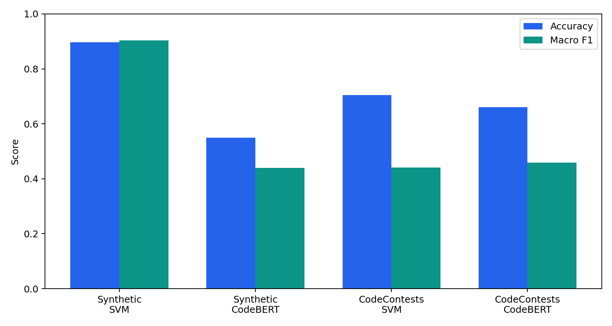
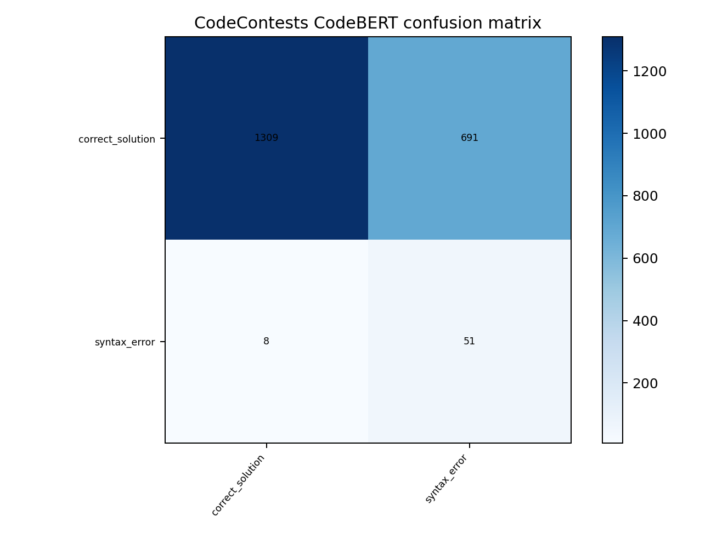

گزارش پروژه تشخیص الگوهای خطای برنامهنویسی در کدهای دانشجویی
۱. هدف پروژه
هدف پروژه ساخت یک سامانه قابل تکرار برای تشخیص الگوهای رایج خطای برنامهنویسی در کدهای پایتون است. ورودی سامانه یک قطعه کد یا فایل CSV شامل چند تحویل برنامهنویسی است و خروجی یک برچسب خطا یا برچسب correct_solution است.
از دید درس شناسایی الگو، پروژه شامل مراحل کامل مسئله است: تعریف کلاسها، آمادهسازی داده، استخراج نمایش از کد، آموزش مدل، ارزیابی، تحلیل confusion matrix و ساخت رابط نمایشی برای استفاده آموزشی.
۲. سؤالهای پژوهش
- آیا نمایش متنی یا contextual کد میتواند الگوهای تکراری خطا را تشخیص دهد؟
- آیا نتیجهای که روی داده مصنوعی به دست میآید روی تحویلهای واقعی هم قابل اعتماد است؟
- وقتی آموزش کامل مدل مطلوب ممکن نیست، چه چیزی را میتوان از یک مدل پژوهشی موفق یاد گرفت؟
۳. دادهها و برچسبها
داده مصنوعی هشتکلاسه
مجموعه مصنوعی شامل ۹۷۶ نمونه یکتای پایتون است. این داده برای ساخت نمونه اولیه و بررسی امکان یادگیری ردهبندی خطا استفاده شد.
| برچسب | معنی |
|---|---|
| correct_solution | کد صحیح |
| syntax_error | خطای نحوی یا خطای تجزیه |
| variable_misuse | استفاده اشتباه از متغیر |
| loop_logic_error | خطا در منطق حلقه |
| conditional_logic_error | خطا در شرطها |
| function_definition_error | خطا در تعریف تابع |
| data_structure_misuse | استفاده نادرست از ساختار داده |
| algorithmic_inefficiency | ناکارآمدی الگوریتمی |
داده واقعی CodeContests
برای اعتبارسنجی خارجی از تحویلهای واقعی Python در DeepMind CodeContests استفاده شد. این داده نوع دقیق خطای معنایی را مشخص نمیکند؛ بنابراین فقط دو برچسب علمی و قابل دفاع ساخته شد: راهحلهای پذیرفتهشده به عنوان کد صحیح، و تحویلهای نادرستی که با AST پایتون قابل تجزیه نیستند به عنوان syntax_error.
۴. کنترل نشت داده و تکرارپذیری
- کدها از نظر line ending و فاصلههای ابتدا و انتها normalize شدند.
- برای هر نمونه fingerprint با SHA-256 ساخته شد.
- نمونههای تکراری در splitها حذف شدند.
- اگر اثرانگشت مشترک بین داده آموزش و آزمون وجود داشته باشد، اجرای آزمایش رد میشود.
- برای داده مصنوعی از تقسیمبندی ثابت و طبقهبندیشده استفاده شد.
- برای CodeContests از تقسیمبندی رسمی مسئلهها استفاده شد تا نشت داده در سطح مسئله کمتر شود.
۵. مدلها
TF-IDF + Linear SVM
مدل پایه ابتدا کد را قطعهبندی و نرمالسازی میکند، سپس ویژگیهای TF-IDF با unigram و bigram میسازد و یک LinearSVC آموزش میدهد. مزیت این روش سرعت، سادگی و تکرارپذیری است. محدودیت آن این است که اجرای واقعی برنامه یا معنای عمیق کد را مستقیماً درک نمیکند.
CodeBERT
مسیر یادگیری عمیق از microsoft/codebert-base با یک سر طبقهبندی استفاده میکند. تنظیمات شامل طول بیشینه ۲۵۶، اندازه دسته ۸، انباشت گرادیان، دقت آمیخته هنگام وجود CUDA، توقف زودهنگام و seed ثابت است. چون آموزش کامل مجموعهداده مطلوب سنگین بود، یک اجرای کاهشیافته روی CodeContests گزارش شد.
۶. نتایج اندازهگیریشده
| مدل | داده | کلاسها | Train | Test | Accuracy | Macro F1 | Weighted F1 |
|---|---|---|---|---|---|---|---|
| SVM | داده مصنوعی | ۸ | ۷۳۲ | ۲۴۴ | 0.8975 | 0.9031 | 0.9005 |
| CodeBERT | داده مصنوعی | ۸ | ۷۳۲ | ۲۴۴ | 0.5492 | 0.4390 | 0.4480 |
| SVM | CodeContests | ۲ | ۱۹,۹۹۹ | ۲,۰۵۹ | 0.7047 | 0.4404 | 0.8029 |
| CodeBERT کاهشیافته | CodeContests | ۲ | ۲,۰۰۰ | ۲,۰۵۹ | 0.6605 | 0.4583 | 0.7703 |

۷. تفسیر نتایج واقعی
در آزمون واقعی CodeContests، توزیع کلاسها بسیار نامتوازن است: ۲,۰۰۰ نمونه صحیح و فقط ۵۹ نمونه خطای نحوی وجود دارد. به همین دلیل دقت کلی بهتنهایی گمراهکننده است و Macro F1 معیار مهمتری محسوب میشود.
| مدل | تشخیص syntax error | Precision خطای syntax | Recall خطای syntax | برداشت اصلی |
|---|---|---|---|---|
| SVM | ۱۸ از ۵۹ | 0.03 | 0.31 | محافظهکارتر است، اما بیشتر خطاهای syntax را از دست میدهد. |
| CodeBERT کاهشیافته | ۵۱ از ۵۹ | 0.07 | 0.86 | Recall بالاتری دارد، اما ۶۹۱ کد correct را اشتباهاً syntax error میزند. |

۸. مطالعه مدل موفق: BIFI
چون آموزش کامل مدل مطلوب روی مجموعهداده بزرگ به طور کامل ممکن نشد، پروژه یک مطالعه مقایسهای روی مدل موفق Break-It-Fix-It یا BIFI اضافه میکند. BIFI توسط Yasunaga و Liang ارائه شده و هدف آن طبقهبندی نیست؛ بلکه اصلاح برنامه است.
BIFI از یک داور مانند تجزیهگر یا کامپایلر استفاده میکند تا تشخیص دهد خروجی مدل واقعاً معتبر شده است یا نه. این مدل ابتدا از خطاهای مصنوعی شروع میکند، سپس با استفاده از داور خروجیهای موفق را نگه میدارد و یک breaker یاد میگیرد که خطاهای واقعگرایانهتری تولید کند.
| ویژگی | این پروژه | BIFI |
|---|---|---|
| نوع مسئله | طبقهبندی الگوی خطا | اصلاح کد خطادار |
| سیگنال آموزشی | برچسبهای مصنوعی و بررسی AST | داور مبتنی بر تجزیهگر یا کامپایلر و دادههای شبهجفت |
| نتیجه شاخص | Macro F1 برابر 0.903 روی داده مصنوعی و 0.458 روی CodeContests با CodeBERT کاهشیافته | دقت اصلاح 90.5% روی GitHub-Python و 71.7% روی DeepFix |
| مزیت | زنجیره پردازش کامل و داشبورد آموزشی | سازگاری بهتر با توزیع خطاهای واقعی |
| نیازمندی | برچسب معتبر و تعادل بهتر کلاسها | داده بزرگ، توان پردازشی بیشتر، داور قابل اعتماد و معماری اصلاح برنامه |
| محدودیت | precision پایین روی syntax error واقعی | برای خطاهای معنایی به آزمون یا بازخورد قویتر نیاز دارد |
منبع: Break-It-Fix-It: Unsupervised Learning for Program Repair.
۹. دستاوردهای پروژه
- ساخت بسته نرمافزاری قابل توسعه برای تشخیص الگوهای خطای برنامهنویسی.
- پیادهسازی مدل پایه کلاسیک و مسیر یادگیری عمیق با CodeBERT.
- ثبت خروجیهای کامل شامل پیکربندی، معیارها، گزارش طبقهبندی و ماتریس درهمریختگی.
- کنترل نشت داده با اثرانگشت و بررسی همپوشانی بین داده آموزش و آزمون.
- اعتبارسنجی روی داده واقعی، نه فقط داده مصنوعی.
- ساخت داشبورد برای ورود کد، مثالهای آماده، بارگذاری CSV و نمایش پیشبینی.
- افزودن مقایسه پژوهشی با BIFI برای توضیح مسیر علمی آینده.
۱۰. محدودیتها
- داده مصنوعی برای اثبات امکان یادگیری مفید است، اما تعمیمپذیری کلاسی را ثابت نمیکند.
- CodeContests داده واقعی است، اما دقیقاً داده کلاسهای آموزشی مقدماتی نیست.
- برچسبهای معنایی واقعی مثل loop logic و algorithmic inefficiency در CodeContests وجود ندارد.
- مسئله فعلی تکبرچسبی است، در حالی که یک کد واقعی میتواند چند خطا داشته باشد.
- نامتوازن بودن آزمون واقعی باعث میشود دقت کلی معیار کافی نباشد.
- برای مدل قابل استفاده در محیط واقعی باید داده دانشجویی ناشناس، برچسبگذاری تخصصی یا بازخورد مبتنی بر آزمون واحد اضافه شود.
۱۱. جمعبندی
پروژه یک روند کاری کامل برای تشخیص الگوهای خطای برنامهنویسی ارائه میکند. نتیجه داده مصنوعی نشان میدهد که زنجیره پردازش میتواند ردهبندی پیشنهادی را یاد بگیرد. نتیجه واقعی نشان میدهد که مسئله در داده واقعی بسیار سختتر است و دقت کلی بهتنهایی قابل اتکا نیست.
مطالعه BIFI نشان میدهد مسیر بعدی باید از برچسب ایستا فراتر برود و از تجزیهگر، کامپایلر یا آزمون واحد به عنوان بازخورد قابل اعتماد استفاده کند. بنابراین دستاورد پروژه فقط عدد نهایی نیست؛ بلکه مشخص کردن مرز ادعاها و مسیر علمی بعدی نیز هست.